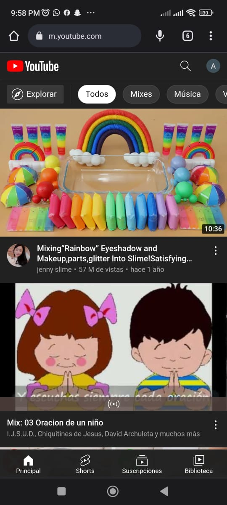
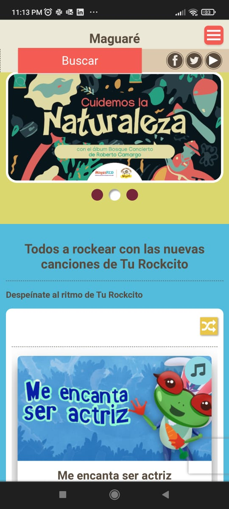

Fitt's Law
YouTube
YouTube is a perfect example of Fitt’s law. First, on this website, the thumbnails make it easier to click on the videos and also to navigate. There is a particularity that here each thumbnail is a button that the designer wishes the user to select. Besides, the size of each thumbnail allows one to see clearly the options and recognize them. At the end of each video quick responses, buttons show, inviting the user to consume more similar content in a sparking way. It is not a casualty, YouTube has a clicks rate parameter between its metrics, tracking their success based on Fitt’s law.
White Space and Clean Design
Chloe Ting
The Chloe Ting website has a sweet combination of pastel colors which is present in all sections consistently. The background is white, it allows a harmonic contrast with the other colors. Each element is properly separated but at the same time related to the other elements. There is also an alignment as well vertically as horizontally among the sections. The size of the elements is similarly giving a sensation of organization and readability making it easy and pleasant the navigation. The child pages also keep the style. The typography is also simple, according to the whole theme. Every aspect of the webpage keeps spaces clean and organized.
PARC: Contrast
Maguaré
Maguaré is a webpage designed for education. This site hosts educational material for students, parents, and teachers. That is why there are many colors used in the design, even so, the view is still harmonic making a great example of contrast. Different sections use different background colors adding contrast options. Typography is also varied and colorful, mixing different background sizes and styles. The most of the images have white borders, it is also helpful with the desired contrast. All the combinations done include neutral colors making the webpage easy to see. White spaces and cleaness are another important part of the design.